Objective: In this lab, you will install Elasticsearch, Kibana, Logstash, and the X-Pack plugins. You will then begin to use the Machine Learning Interface, load some data and create a Single Metric Job.
Extract the Elasticsearch file that you just downloaded. You can extract it anywhere convenient on your local machine, and the following lab instructions will refer to your Elasticsearch folder as ES_HOME.
Open a Terminal or Command Prompt and change directories to your ES_HOME/bin folder. Start Elasticsearch using the following command:
On Windows:
.\elasticsearch
Mac/Linux users:
./elasticsearch
Open your Web browser and go to http://localhost:9200. You should see the start page that verifies Elasticsearch is running on your localhost. More importantly for this lab, notice that you can access this URL without logging in.
Stop Elasticsearch by entering ctrl-c in your terminal window running Elasticsearch.
Install X-Pack using the following command from ES_HOME/bin:
On Windows:
.\elasticsearch-plugin install x-pack
Mac/Linux users:
./elasticsearch-plugin install x-pack
You will have to confirm the install after it downloads by entering y when prompted. (Also enter y if warned about a native controller.)
Start Elasticsearch again and go to http://localhost:9200. This time you are prompted to login. Use the default credentials.
Username: elastic
Password: changeme
Download the appropriate version of Kibana for your architecture at https://www.elastic.co/downloads/kibana. You must use version 5.0 or greater for this course, and be sure to download the same version of Kibana that matches your version of Elasticsearch.
Extract Kibana onto your local machine. This folder will be referred to as KIBANA_HOME throughout the labs in this course.
Open a new Terminal or Console. Install X-Pack on Kibana by running the following command from the KIBANA_HOME/bin folder:
On Windows:
.\kibana-plugin install x-pack
Mac/Linux users:
./kibana-plugin install x-pack
It may take several minutes for the necessary files to download and install.
Start Kibana by running the following command from the KIBANA_HOME/bin folder:
On Windows:
.\kibana
Mac/Linux users:
./kibana
Point your web browser to http://localhost:5601. You will need to login (because X-Pack is installed). The default credentials for the admin user are:
Extract Logstash onto your local machine. This folder will be referred to LOGSTASH_HOME throughout the labs in this course.
Now you are ready to load some data to play with in this lab. We will use Logstash to load this data. To simplify the Logstash command, copy the stocks/stocks.csv and stocks.conf files from the downloaded lab files into your LOGSTASH_HOME/bin folder.
From a new Terminal or Command Prompt window, change directory to the LOGSTASH_HOME/bin directory and run this command to begin loading the data into Elasticsearch:
On Windows:
type stocks.csv | .\logstash -f stocks.conf
Mac/Linux users:
cat stocks.csv | ./logstash -f stocks.conf
After this data has finished loading open the Dev Tools tab in Kibana and run this command:
GET stocks/_search
You should get 1,859 hits.
It's important to get familiar with what the data looks like you want to use. You got back 10 documents from your previous query. Notice each document has a @timestamp field (when this document was aggregated) and fields representing the price at the time of the aggregation for DAX, CAC, FTSE and SMI.
You have to setup the index pattern so Machine Learning can use this index for analysis. Click on the Management tab and select Index Patterns:
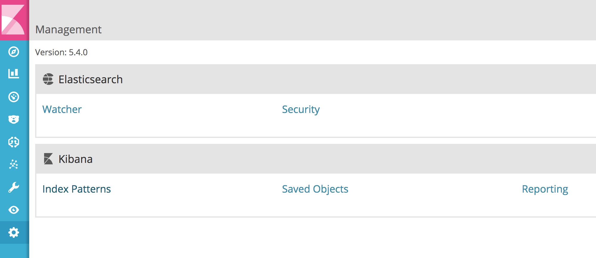
Create an index pattern called stocks and then click Create:
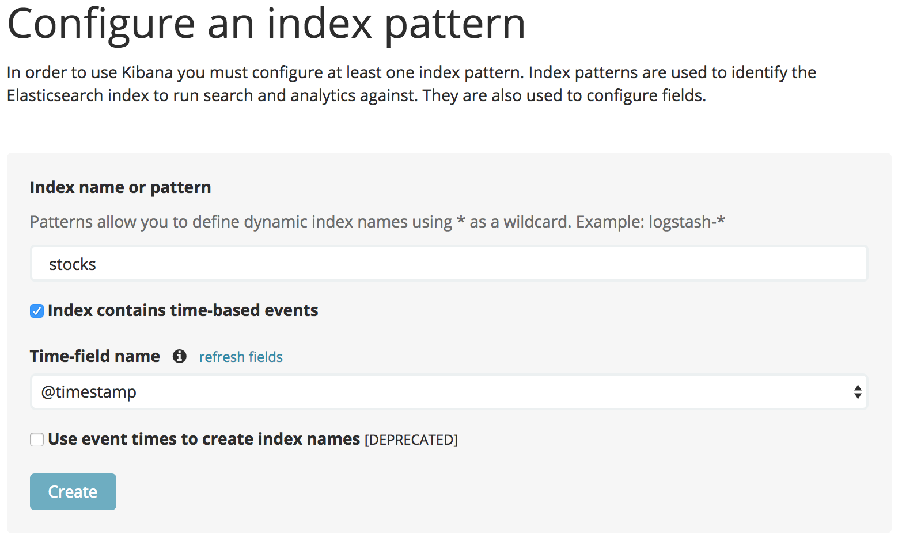
You are now ready to create a Machine Learning job for the stocks dataset! Click on the Machine Learning tab and click Create new job and then select Create a single metric job:
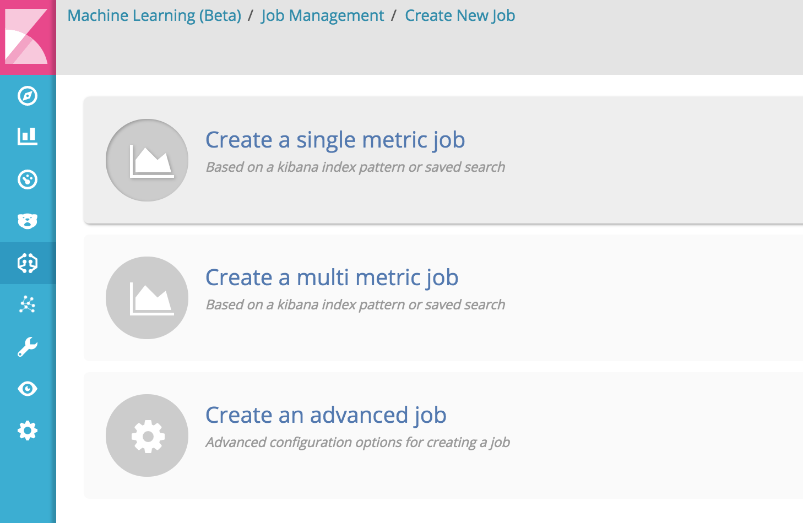
Select the stocks index:
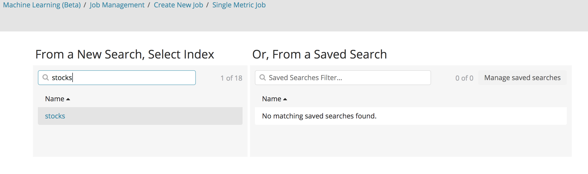
This dataset represents aggregated index forecast data from 4 different exchanges. Because the data was pre-aggregated to 1800 second intervals it isn't very precise from the original data - but it's good for training!
Using a Count aggregation wouldn't make much sense. Try it and view the results using 30m Bucket Spans. Make sure you click on the "Use full stocks data" button on the right-hand side.
You'll notice you don't see anything interesting. It is because this dataset is pre-aggregated prices so each interval has the same count of documents. What would be a more interesting Aggregation to use?
Mean is much more interesting! And if we want to get a Mean we need to select a field. And because we are interested in the DAX Exchange we would select DAX.
Configure this job to use:
The Mean aggregation
On the field DAX
With a 30m Bucket Span
Below the graph, assign the job Name as stocks-dax-mean
Fill in a Description like "This job will detect anomalies in the DAX market"
Your configuration should look like this:
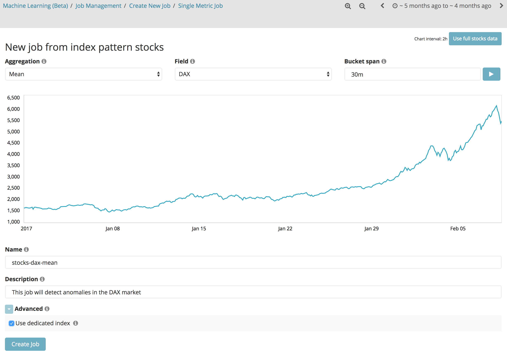
After configuring the job, click the "Create job" button. You will notice that Machine Learning begins to analyze the data. When the job is complete, click the "View results" button. You should see the "Single Metric Viewer" page. (NOTE: Kibana shows this result in a separate popup window. You may need to allow Kibana to open a popup window in your browser settings.)
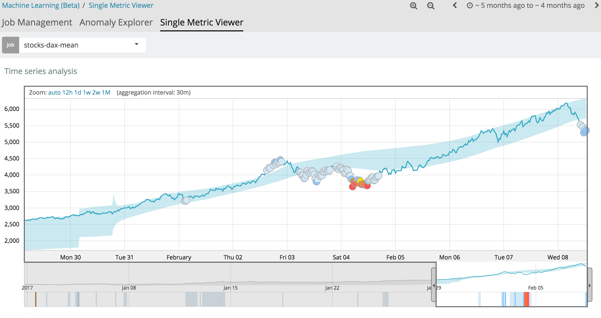
In the Anomalies section below the chart on the Single Metric Viewer page, change the Interval: dropdown to "Show all". How many critical anomalies are found across the entire dataset? What is the highest anomaly score for the critical anomalies and what is the minimum in this dataset?
There are 6 criticals and the maximum is 97 and the minimum is 75.
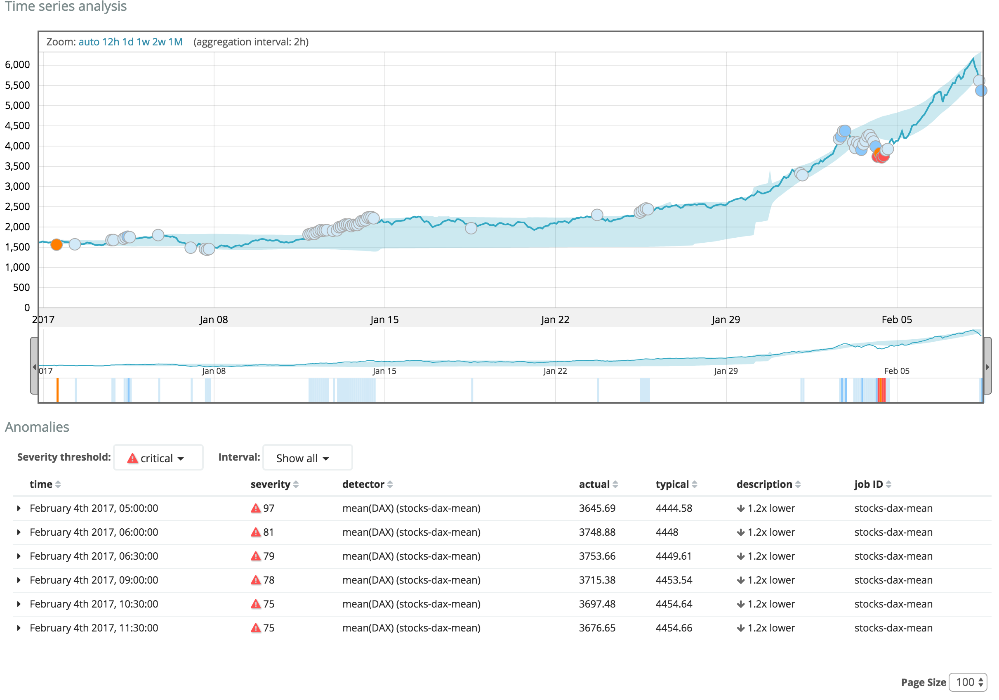
What day did the only minor anomaly occur?
February 4th 2017, 08:00
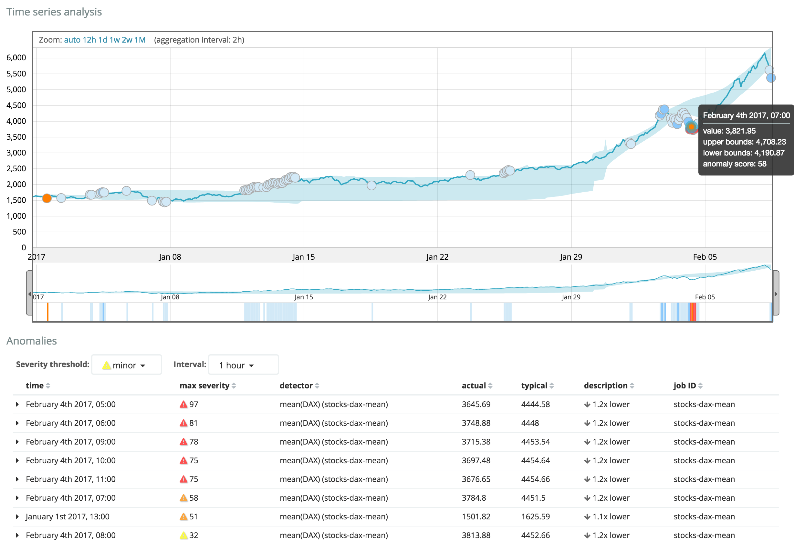
Summary: Congratulations! You have completed Lab 1. You loaded the sample data and installed X-Pack, and you created a Single Metric Job with which you discovered anomalies.
End of Lab 1
Lab 2: Multi-Metric Jobs: Fare Quote
Objective: In this lab you will load farequote data and analyze it using the Multi Metric job creator. We want to see how partitioning data and selecting influencers can benefit our analysis and discovery of anomalous behavior. This dataset is based on fictional airlines and the response time our systems are recording when communicating with them. Each document specifies the @timestamp of the event, how long the response took, and the airline code. An analogy for this type of data could be calling various services over time and determining when they are not behaving as planned by logging and analyzing the data.
First, you need to load a new dataset for this lab. Start by copying the farequote/farequote.csv and farequote/farequote.conf files from the lab folder into your LOGSTASH_HOME/bin directory.
From your LOGSTASH_HOME/bin directory, run the following command:
On Windows:
type farequote.csv | .\logstash -f farequote.conf
Mac/Linux users:
cat farequote.csv | ./logstash -f farequote.conf
To verify the data was loaded successfully, run the following command:
GET farequote/_search
You should get 86,275 hits.
The interesting data points are @timestamp, responsetime, and airline. Remember, the count of documents is interesting too! What is the minimum and maximum value for the @timestamp field?
The minimum @timestamp value is "2015-12-07T00:00:00.000Z" and the maximum is "2015-12-11T23:59:56.000Z". You can get these values using this aggregation:
We also know that the 86,275 documents in this dataset span about 4 full days. By knowing this we understand the rate at which documents are coming into our system and this helps determine reasonable bucket spans. How many unique airlines are there?
There are 19 unique airlines. The cardinality aggregation can show this:
Because there are 19 unique airlines, there are on average 4,540 events per airline (Keep in mind the actual distribution is not even across airlines. Can you figure out how to see how many records exist for each airline?). This dataset covers 96 hours worth of events which means there are about 47 events per airline per hour. In total there are about 898 events per hour total. This type of information can influence the bucket span that may make sense. Would it make sense to use bucket spans of 1 minute considering this?
No. There isn't enough data coming in per minute. However, 15m or 30m bucket spans would be appropriate. Machine learning works best when it has enough samples to work on.
Create an index pattern for farequote. To do this you need to open the "Management" tab in Kibana, then select "Index Patterns", then click the plus "+" icon to add a new pattern. Use farequote for the "Index name or pattern" and set the timefield to @timestamp.
It is time to build a Machine Learning job! Create a Single Metric job that uses the Count aggregation to detect anomalies across the entire farequote dataset. Use 30m bucket spans. Name the job farequote-count. Remember to click the "Use full farequote data" button before creating the job.
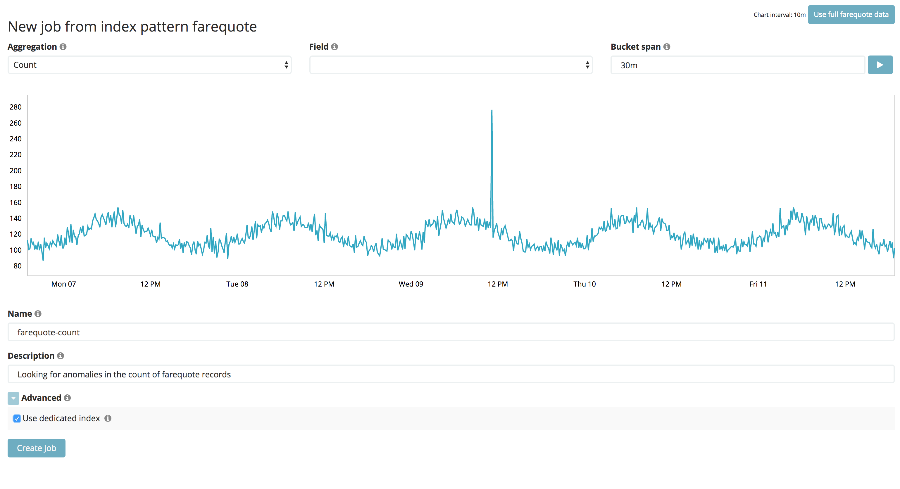
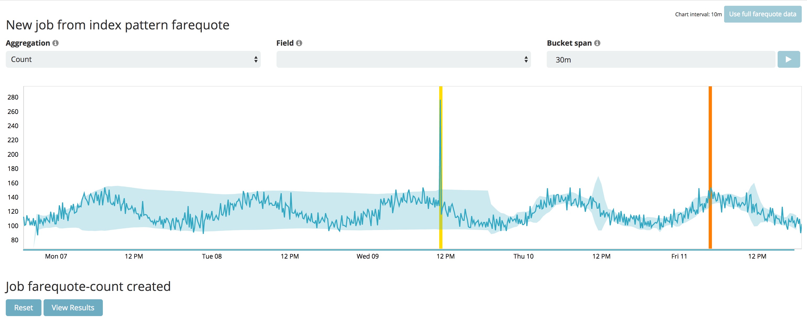
At what time did the 1 major anomoly occur?
December 11th 2015, 04:30:00
If you View results you will easily find this anomaly.
Create a new Multi Metric job from the farequote index. How would you configure a job so that it can detect when the Mean of the responsetime field is anomalous and which airline(s) are responsible?
We need a job that has this criteria:
responsetime selected and the Mean aggregation selected
A reasonable bucket span - 15 minutes would be fine.
airline.keyword would be the Key field, or Influencer
The job configuration would look like this:
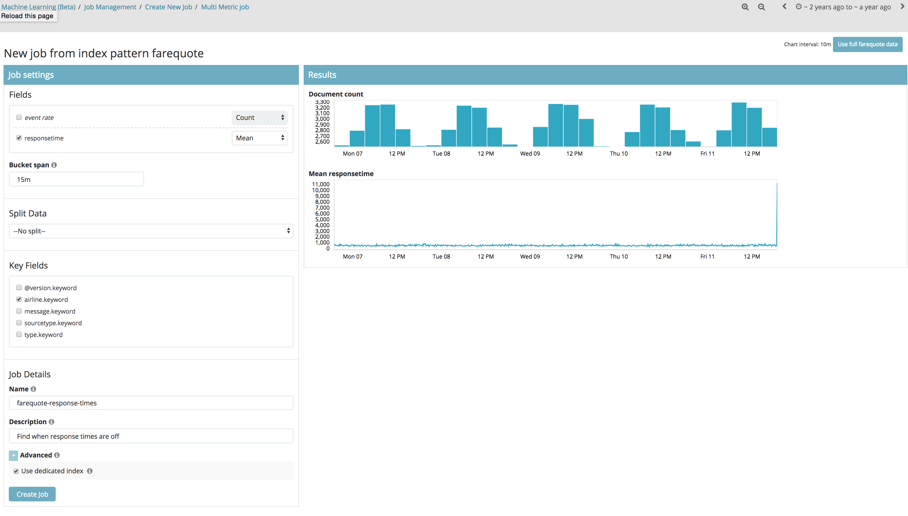
What are the top 2 airlines that are influencing unusual response times?
The 2 main influencer's are AWE and NKS. Keep in mind that you are using a Mean analysis function. If you wanted to track specifically the slow responders you would want to use a Low Mean function and if you wanted to track the fast ones specifically then you could use High Mean.
Create a new Multi Metric Job that now Split's the data by airline.keyword. Now instead of comparing the response time against the dataset as a whole, the response time will be compared to each individual airlines history.
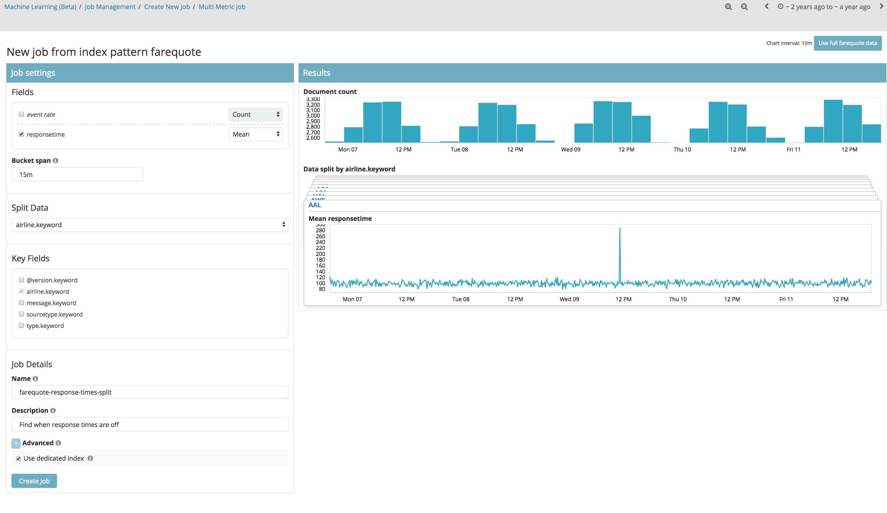
What are the top-2 influencer's now?
The top-2 influencer's are now AWE and AAL. The reason it is different than the previous 2 (AWE and NKS) is because we were looking at each airline individually this time against their own history.
Click on the Anomaly Timeline Overall on the date "December 8th 2015, 19:00". You'll notice that there is a breakout for each individual top-influencer but one of them has critical anomalies individually showing for itself. Why did this not show up in the overall timeline?
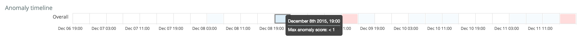
When you're looking at the breakout of anomalies it's important to realize that only the part shaded in gray is representative of overall at that time. The UI shows some before and after. You'll notice the AAL critical's you see actually occurred later, on December 9th 2015, 11:00. Click on the overall box on that date and you'll those 2 critical's are now in the gray shaded area.
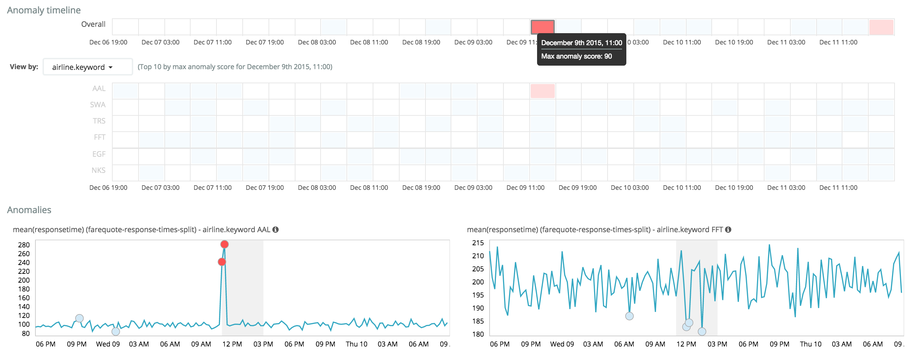
Create a Multi Metric job that only uses the Count but also sets a Keyfield or airline.keyword. Compare the results of this to the previous Single Metric job you created for the farequote data. Both show a single critical anomaly for the same airline on the same date but they have a different Anomaly Score. Why is this?
The Simgle Metric job created a score of 80 and the Multi Metric job using the Keyfield generated one of 98. This is because with the Multi Metric job you compared the airlines to their own past behavior rather than the entire dataset as a whole. When creating Machine Learning jobs you will have to consider if it makes sense to partition or not. And sometimes you'll want a job that does both!
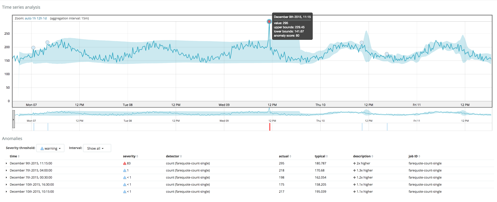
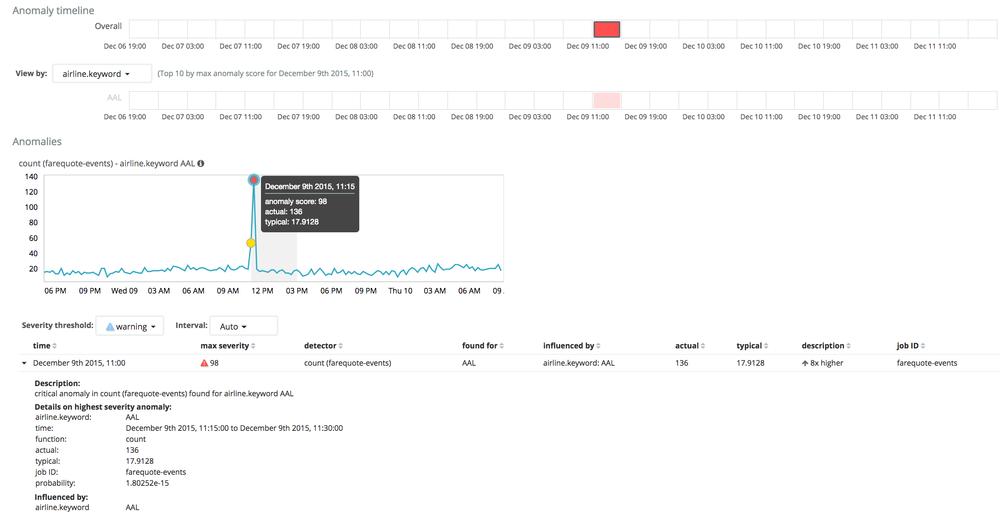
Summary: Congratulations! You have completed Lab 2. You loaded another dataset and built Multi Metric jobs with it.
End of Lab 2
Lab 3: Advanced Jobs: Cloudwatch
Objective: In this lab you will load cloudwatch data and analyze it using the Advanced job creator. You will also add a filter to a data feed, use a script to concatenate a field for Machine Learning analysis, and see how you can use multiple detectors in a single job. The dataset that this lab uses is similar to data you would see if you were to collect system metrics from many machines in a typical infrastructure - things like network in and out, disk I/O and CPU utilization.
First, you need to load a new dataset for this lab. Start by copying the cloudwatch/cloudwatch.csv and cloudwatch/cloudwatch.conf files from the lab folder into your LOGSTASH_HOME/bin directory.
From your LOGSTASH_HOME/bin directory, run the following command:
On Windows:
type cloudwatch.csv | .\logstash -f cloudwatch.conf
To verify the data was loaded successfully, run the following command:
GET cloud*/_search
You should get 258,440 hits.
The interesting data points are @timestamp, instance, and region. There are also numerous fields that have to do with metrics that were collected from the various instances. The count might not be too interesting in this case since we would expect that we would receive a near constant flow of metrics data. What is the minimum and maximum value for the @timestamp field?
The minimum @timestamp value is "2015-10-28T00:00:00.000Z" and the maximum is "2015-11-11T13:31:00.000Z". You can get these values using this aggregation:
We also know there are 258,440 documents in this dataset which spans about 2 weeks. By knowing this we understand the rate at which documents are coming into our system and this helps determine reasonable bucket spans. In a real-world environment we would probably want to specify new anomalies in about 15m-30m ranges as well.
Create an index pattern for cloudwatch. To do this you need to open the "Management" tab in Kibana and create a new index pattern for cloudwatch* and set the timefield to @timestamp. Keep in mind that the data import will create numerous indexes for this data so we use the * character to specify that this pattern will match any index that begins with "cloudwatch".
Since we are capturing metrics from a variety of instances it would make sense to create multiple detectors and partition on the instance field. Create a new Advanced Job:
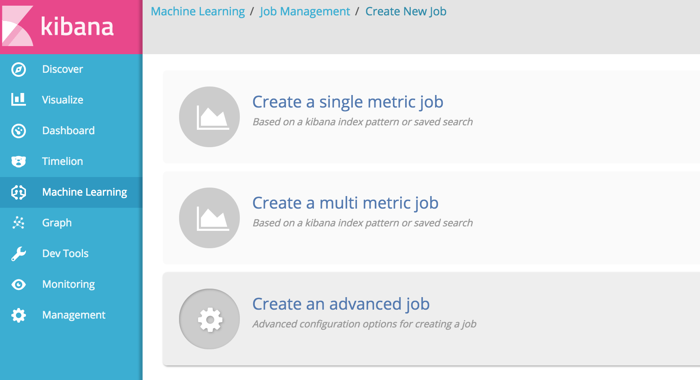
Select all of the cloudwatch* indices. IMPORTANT: On the Job Details tab, be sure to check the box Use dedicated index. Configure the job to have these settings:
A detector which find the Mean of CPUUtilization and a partition field of instance.keyword and 1h bucket spans
A detector which find the Mean of DiskReadBytes and a partition field of instance.keyword and 1h bucket spans
A detector which find the Mean of DiskReadOps and a partition field of instance.keyword and 1h bucket spans
A detector which find the Mean of DiskWriteBytes and a partition field of instance.keyword and 1h bucket spans
A detector which find the Mean of DiskWriteOps and a partition field of instance.keyword and 1h bucket spans
A detector which find the Mean of NetworkOut and a partition field of instance.keyword and 1h bucket spans
A detector which find the Mean of NetworkIn and a partition field of instance.keyword and 1h bucket spans
Set influences to instance.keyword and region.keyword
Start the job and after processing open the Anomaly Explorer and find the region that has contributed the most critical anomalies.
We can see that the region with the most critical's is sa-east-1. We can see this by the Top Influencers chart on the left and also by selecting region in the View by drop down.
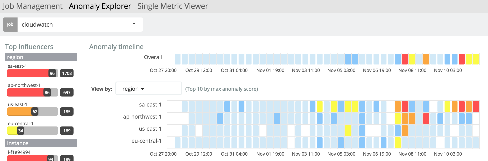
Set the View by to region and click on the critical anomaly score cell for sa-east-1 on the date November 7th, 2015 19:00. When you scroll down you'll see a chart for mean(DiskWriteOps) partitionfield=instance (cloudwatch) - instance i-5d302081. To the right of that there is a View icon that when clicked will take you to the Single Metric Viewer. Click that:
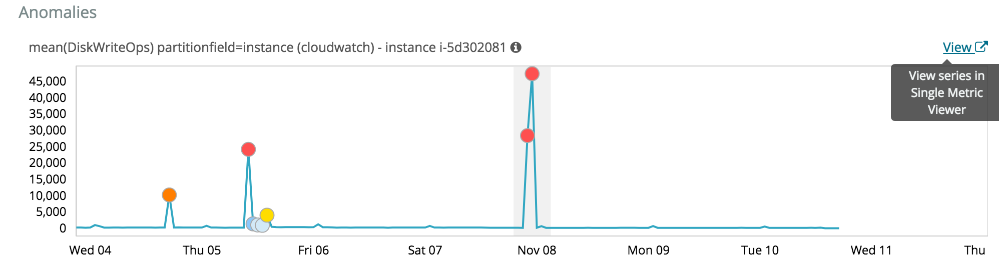
How many anomalies are in that range that are of level minor or higher?
There are 5 anomalies that are warning or higher. Remember to set the Interval to all
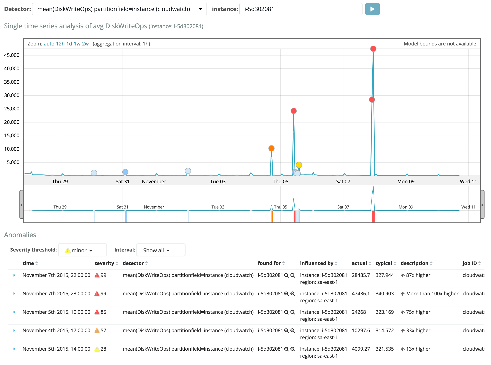
Clone the job you just made by clicking Clone job in the Job Management UI. Follow these instructions:
When the analysis is complete open the Anomaly Explorer for this job.
Compare the results to the previous job for the eu-central-1 region.
Notice how the new job only analyzes this region?
Do you notice how the Overall timeline for this job is different than the timeline for the region in the previous job?
This is because the new job uses a filter. So the overall anomaly score is only influenced by this region.
For this new job, which instance is the most problematic in terms of anomaly score?
i-e3156052 is the most problematic.
For this instance, which metric has the highest anomaly score across the entire timeline?
It would appear CPU Utilization has the highest anomaly score overall for this region and this instance:
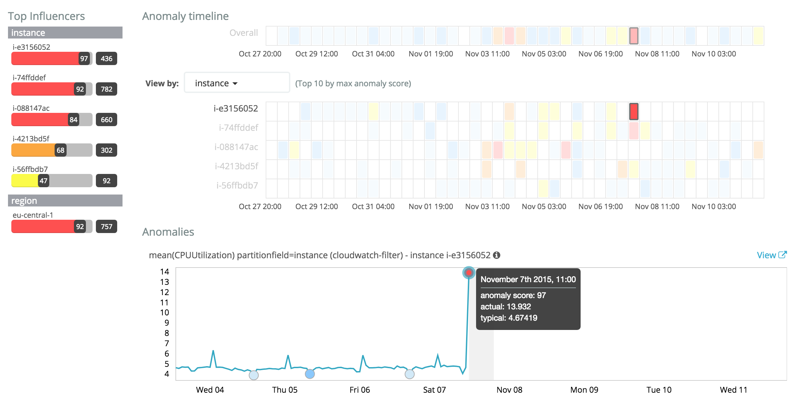
Try creating advanced jobs for the other datasets you have loaded. What do you come up with that is interesting!?
Summary: Congratulations! You have completed Lab 3. You loaded another dataset and built Advanced jobs as well as cloned them and added filters.
End of Lab 3
Lab 4: Machine Learning API
Objective: In this lab you will interact with your existing anomalies using the Machine Learning API. Hopefully, after this lab you will better understand how you could automate the detection of anomalous behavior. For bonus points you can use X-Pack: Alerting to create Watches that will alert you when the types of anomalies you are interested in are generated. You will be using these API's in this lab. You will want to bookmark this as it is a great reference:
Get a list of the anomaly detectors you have created:
GET _xpack/ml/anomaly_detectors/
You created one for cloudwatch in the previous lab. Record its job_id. For example, mine was called cloudwatch. Use that job_id to get the records associated with it:
GET _xpack/ml/anomaly_detectors/cloudwatch/results/records
You should see a record that looks similar to this:
Even better - notice how we are getting back fewer and fewer documents each time?
We are working with a static dataset. In most situations you would have a datafeed that would continually gather results and process them. You could then use these API's to see if there are new anomalies recorded. To simulate this, we will use this API to get the first 5 records and then record the final timestamp. We could then use that to get the next batch:
In reality you would record the final timestamp of the last record (and not limit the paging) and then use that on the next run to fetch the new anomalies.
Record the final timestamp and modify the request to get records since starting at that time:
This simulates how you might consider gathering records scheduled to run on a similar schedule to the associated datafeed and job.
Now we want to create a new job and begin the datafeed and then stop it before it is done. You'll want to get your API request ready before you create the job and datafeed. Use the name "new_job" for a new job you will create and then stop the datafeed while it runs:
POST _xpack/ml/datafeeds/datafeed-new_job/_stop
Notice how Machine Learning names the datafeeds with a prefix of datafeed- to the job id. In this case it is named datafeed-new_job.
Create a new job and configure it and then start it. Quickly go back to the Dev Tools and run the command from the previous step. You should see this output:
{
"stopped": true
}
If the datafeed has already ended then you will receive a 409 response code indicating the datafeed has been stopped.
Now restart the datafeed:
POST _xpack/ml/datafeeds/datafeed-new_job/_start
Try playing around with some other API requests to create a job, create a datafeed, open the job, start the datafeed and analyze the results using the records API. Good luck!
Summary: Congratulations! You have completed Lab 4. You used various API's to explore your anomaly data and stop and start a datafeed. Maybe you even created and started a new job and datafeed with the API!